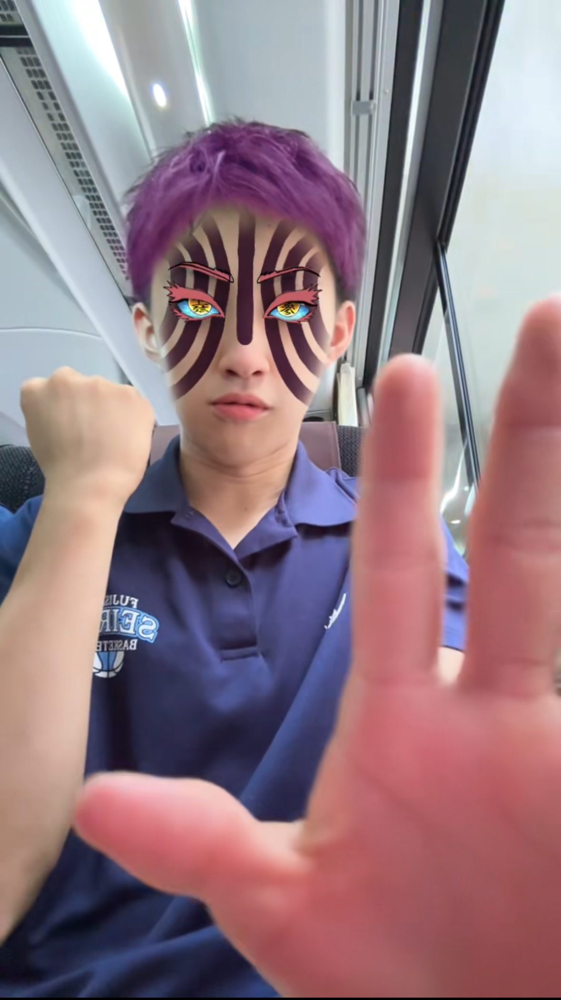

お問い合わせはこちら
バスケットボールは小学一年生の頃にはじめ、高校の部活を引退した後も、時々バスケをしています。
みなさん、バスケで楽しみましょう。
気分により聴きたい曲は日々変わりますが、旅がワクワクするような気持ちが良いテンポの曲を聴くとつい踊ってしまいます。
誰かに自慢できるほど曲マニアみたいな感じではないですが、曲を聞いてるその瞬間に、覚醒してるような厨二っぽい感覚になれるのがめちゃくちゃくっちゃー快感です。
友達とは基本的に何をしても楽しいです。
釣りも好きですが、なかなか中釣れなくて行くのが億劫に感じてしまいました。
魚が釣れやすい季節にチャレンジしてみようと思います。
僕は友達と何か新しいことに挑戦するのが好きです。
1人より友達との方が倍楽しいからです。
まだバイトをしておらず自分で稼げていない状況なので、自分でバイトして稼いでその分楽しめるようにしたいです。
新たな経験を通して
自分の見たことのない景色や、
感じたことのない感情
に出逢いに行きます。
↓↓↓プログラミング勉強垢
@tani_the_world
↓↓↓ 個人ブログ垢
@hiro___2o_8